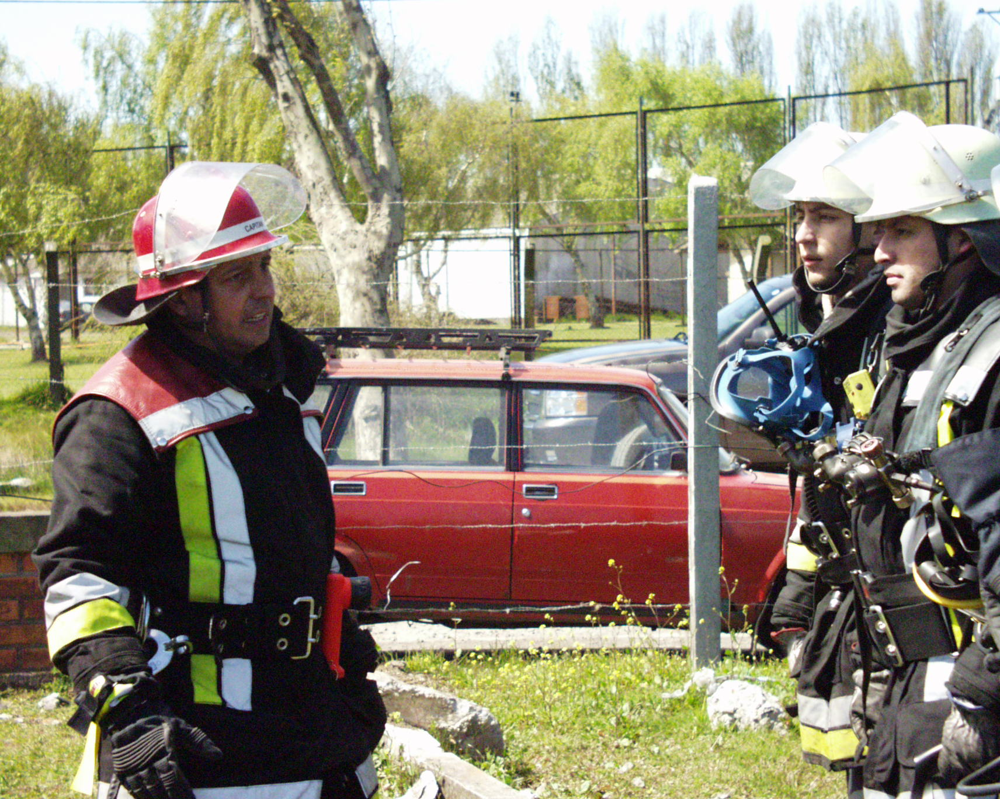

Nuestros líderes, por años han sido aquellos voluntarios destacados y que cumplen con el perfil de todo Quintino. Los oficiales de nuestra Quinta Compañía de Bomberos, son elegidos de manera democrática todos los años, a través de votaciones abiertas en el que todos los integrantes, desde los recién ingresados hasta los honorarios son activos participantes y protagonistas del futuro de nuestra compañía.Por nuestro directorio han pasado ilustres personas que han marcado el camino de la compañía y que serán siempre recordadas por su gestión y manera de conducir a la Quinta como una institución firme y arraigada en las tradiciones, en la disciplina y el respeto a los pares.
| OFICIALES DE COMPAÑÍA 2018 |
| Director de Compañía Voluntario Honorario Sr. Jorge Ogalde Gómez Secretario de Compañía Voluntario Sr. Juan Pablo Fernández Madrid Tesorero de Compañía Voluntario Sr. Jaime Sandoval Velásquez Intendente de Compañía Voluntario Sr. Lisandro Araya Fritis Capitán de Compañía Voluntario Honorario Sr. Nelson Salgado Ríos |
Cuartel 50 del Cuerpo de Bomberos de Talcahuano
De la misma forma, es importante recalcar el espíritu de nuestros más antiguos y sus connotadas carreras bomberiles. Es así como el 3 de Septiembre de 1994 , los Miembros Honorarios del Honorable Directorio General del Cuerpos de Bomberos de Talcahuano y Voluntarios Insignes de Chile, voluntarios de la Primera Compañía, se reúnen en el ex-casino del Cuartel Central para tratar la idea de organizar un estamento que agrupe a todos los Voluntarios Insignes de la institución en una compañía simbólica, donde su único fin será confraternizar, intercambiar experiencias y hacer recuerdos de sus años vividos en las filas de la institución. Así nace, el Cuartel 50 integrado por los voluntarios mayores de 50 años de servicio.
Comisiones y Departamentos
Las comisiones de nuestra compañía las integran voluntarios idóneos para realizar actividades que apoyan la gestión que realizan los oficiales de compañía, ya sea en materias administrativas o ejecutivas y se eligen de forma democrática en la misma ocasión en que se reúne la asamblea que escoge a los nuevos oficiales anuales. A su vez, los departamentos se forman para mantener en constante actualización y supervisión de un área o campo de conocimientos bomberiles o la mantención de estándares administrativos.
Maquinistas de Compañía 2018
Nómina de Maquinistas autorizados para conducir y maniobrar Móviles Institucionales con Licencia Especial Clase F.
| MAQUINISTAS DE COMPAÑÍA 2018 |
| ALVARO CEA VALVERDE ANSELMO VILLAGRA CABELLO CESAR AGUILERA DURAN CLAUDIO CEBALLOS ARIAS CLAUDIO DURAN CABALLERO FERNANDO VERA TORRES FRANCISCO CASTRO HERRERA FRANCISCO JIMENEZ DORREGO GUSTAVO LAMIG FRITZ JAIME ATHENS MOSCOSO JAVIER ETCHEVERRY SCHROER JORGE GONZALEZ SILVA JUAN CARLOS VALLEJOS TORRES JULIO CACERES GAJARDO KLAUS LAMIG CARRION LISANDRO ARAYA FRITIS LUIS VEGA VILLEGAS LUIS VERA DONOSO MARCELO QUEZADA QUIJON MAURICIO OLIVEROS HENRIQUEZ NELSON DUFFAU GALVEZ NELSON SALGADO RIOS PATRICIO ALBORNOZ LLANOS PABLO CERLIANI MOCOCAIN PATRICIO OBREGON VALVERDE PAUL MUÑOZ SUTTER RENATO BARRUETO DECAP RODOLFO GARRIDO RETAMAL VICTOR ENRIQUIZ VALENZUELA |